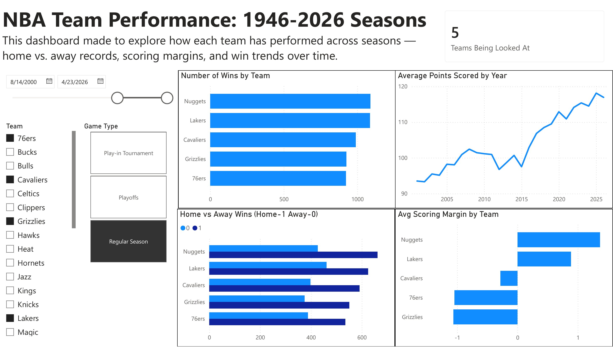
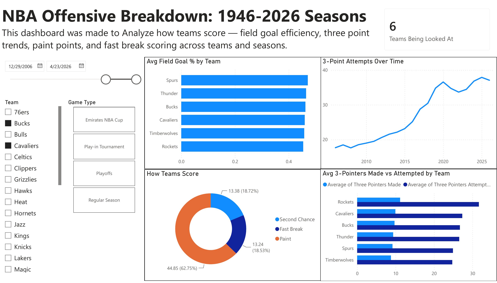
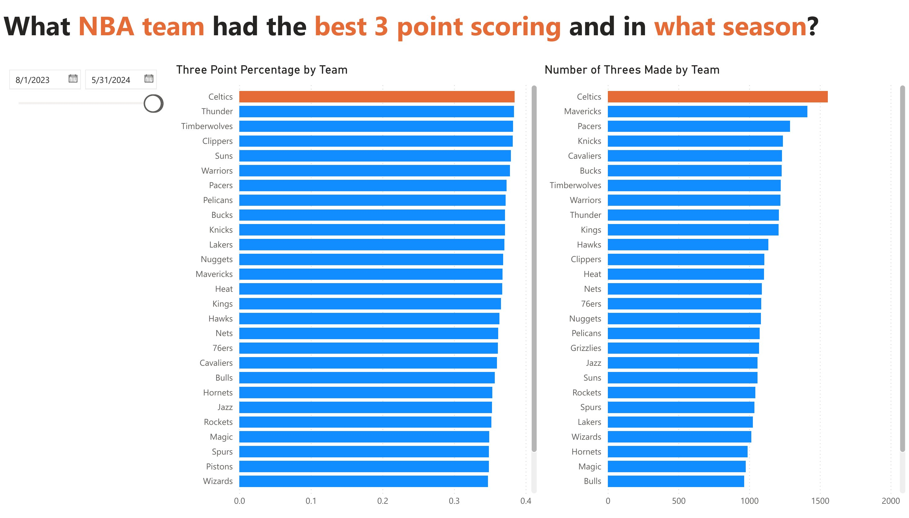

← All projects
Dashboard · Power BI
NBA Team Stats Dashboard
An interactive Power BI dashboard for exploring how NBA teams win and score, built from about 146,000 rows of game data.
Overview
I built a three-page interactive dashboard in Power BI to explore NBA team performance across seasons. The dataset has roughly 146,000 rows of game data, and every page is driven by date, team, and game-type filters so a viewer can narrow it to the teams and seasons they care about.
~146Krows of game data
3dashboard pages
4game types: regular season, playoffs, play-in, NBA Cup
Process
- Cleaned and modeled the data in Power Query, removing duplicate records and fixing relationship errors between tables.
- Wrote DAX measures to correct aggregation logic, so averages and percentages calculate correctly under any filter.
- Designed one reusable layout of slicers, KPI cards, and a chart grid, then applied it across all three pages.
The dashboard



What it showed
- For the five teams shown on page one, average points per game climbed from about 93 in the early 2000s to about 118 by 2025.
- Three-point attempts per game rose sharply over the same stretch, which the offensive breakdown page tracks season by season.
- Comparing three-point volume against efficiency pointed to the 2015 Golden State Warriors as the best blend of both. Filtered to 2023–24, the Celtics led the league in threes made and three-point percentage.